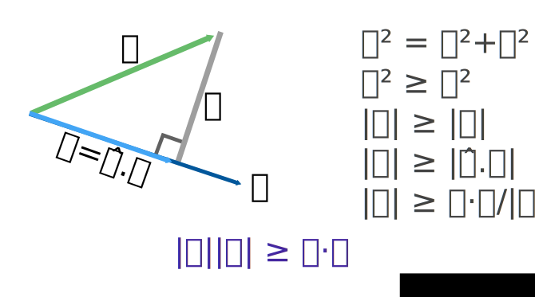

§ Geometric proof of Cauchy Schwarz inequality

- All credit goes to
p0a on ##math on freenode for teaching me this proof!
Here's one fun application of Cauchy-Schwarz. We can apply it to two vectors
x=(a,b) and y=(b,a) to derive the AM-GM
inequality: